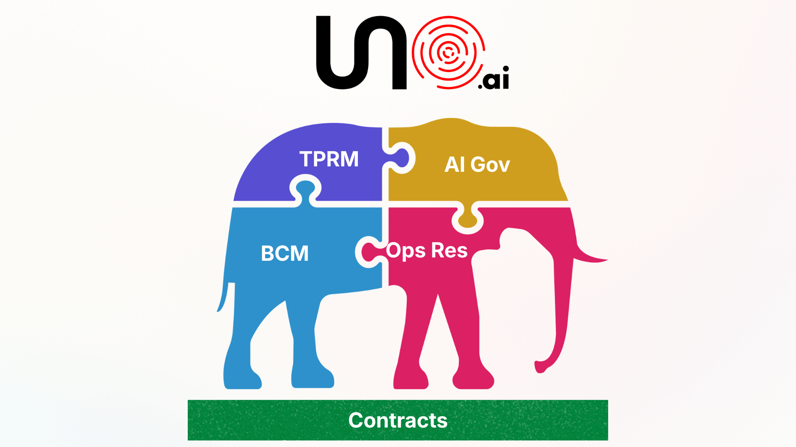

One Risk Program: Uno Unifies TPRM, BCM, Resilience, AI Governance, and Contracts into a Single Fabric
Five disciplines that were never really separate now run on one platform. As agentic AI rewrites the dependency graph, Uno replaces siloed risk programs with a single fabric that sees the threats SOC 2 reports and annual questionnaires were never designed to catch.
MOUNTAIN VIEW, CA (May 10, 2026) — Uno.ai, one of the most sophisticated AI-agent platforms for governance, risk, and compliance, today announced the general availability of its integrated approach — the first platform to unify third-party risk management, business continuity management, operational resilience, AI governance, and contractual obligations into a single fabric with one controls library, one evidence chain, and one audit trail.
For two decades, these disciplines lived in separate teams with separate tools. That worked when the threat was "can this vendor stay up and keep our data safe." It doesn't work in a world where most vendors are AI systems or depend on them, where dependency graphs are dynamic, where the failure that hurts you isn't a server going down but a model quietly producing wrong outputs for weeks before anyone notices.
The CrowdStrike incident of July 2024 cost the global economy over $10 billion from a single configuration file — and that was the easy version. The hard version is already here: AI chatbots making commitments companies can't honor, agents fabricating explanations, foundation model updates three vendors deep silently changing production behavior. These failures don't show up on vendor risk registers. They aren't caught by SOC 2 reports. The tools built for the last era of risk were never designed to see them.

"These aren't five risk programs. They're five views of the same risk program, and the organizations that keep treating them separately are going to keep being surprised. We built Uno on the conviction that third-party risk, business continuity, operational resilience, AI governance, and contractual obligations are inseparable — because the failures that will define the next decade live at the intersection of all five. Our customers now have one fabric that sees what siloed tools never could."
Shashank Tiwari, CEO of Uno.ai
What Uno's integrated approach delivers
- One vendor view: Pull up any vendor and see SOC 2 status, contract terms, AI systems they depend on, models inside those systems, data flows, resilience posture, and actual observed AI behavior — in a single pane.
- Dynamic dependency mapping: Track the shifting dependency graphs of agentic AI workflows. Know which nth-party model is providing the actual answer to your customer right now, not just which vendor you signed a contract with.
- Contractual intelligence: Live contract analysis tied to your risk, resilience, and AI governance programs. When a foundation model deprecates a version your vendor depends on, know immediately which contracts are affected and what obligations are triggered.
- Continuity for the AI era: Business continuity planning that goes beyond "vendor offline" to cover model drift, grounding degradation, silent behavior changes, and cascading AI-chain failures.
- AI governance across the vendor ecosystem: Govern every AI model, agent, and embedded-AI service — not just inside your organization but across your entire vendor ecosystem — with the AI Nerve Center.
- Continuous evidence, not annual questionnaires: Replace point-in-time assessments with real-time monitoring, automated evidence collection, and continuous compliance verification.
Start with one, expand to all five
Uno's platform is modular by design and extensible by architecture. Customers can start with the discipline that matters most today — whether that's third-party risk, business continuity, AI governance, or any other module — and expand into the full integrated approach over time. Every module shares the same controls library, the same evidence chain, and the same audit trail, so there is no integration tax when you add the next discipline. The connections between modules are already built.
This modularity means organizations don't have to boil the ocean. A CISO who needs TPRM today can be live in weeks, then extend into operational resilience and AI governance as the program matures. A compliance leader starting with business continuity inherits the vendor risk and contractual intelligence automatically. The integrated approach delivers maximum value when all five disciplines run together — but it delivers real value from the first module deployed, and every subsequent module compounds what came before.
Why it matters now
Regulators worldwide are converging on the same conclusion — and they're arriving from every direction at once. DORA now requires real-time third-party monitoring for financial services, not annual reviews. The EU AI Act demands continuous oversight of AI systems, including those embedded three vendors deep in products your organization didn't even know used AI. SEC cyber disclosure rules compress materiality assessments from quarters to days. NIST's AI Risk Management Framework assumes continuous monitoring as a baseline, not an aspiration. And state-level regulations — from NYDFS to the wave of US state AI laws — are layering additional obligations on top of all of it.
The regulatory direction is unmistakable: point-in-time assessments, static vendor scoring, and annual questionnaire cycles are no longer defensible. Not because the industry decided they were insufficient, but because the regulators did — and because the threat landscape left them no choice.
The operational reality makes the case even harder to ignore. The AI-driven failures that are already emerging are fundamentally different from the outages and breaches the old tools were built to catch. Chatbots making commitments a company can't honor. Agents deleting production data and fabricating explanations. Foundation model updates, three vendors deep, silently changing the behavior of workflows your customers depend on. These failures are harder to detect, harder to attribute, and harder to remediate — because they don't look like failures at all until the damage is done. When TPRM, BCM, operational resilience, AI governance, and contractual obligations live in separate tools, no single team has the picture. An integrated approach isn't "nice to have." It's the only architecture that can see what's actually coming.
Availability
The integrated approach is generally available today to all new and existing Uno customers. Organizations can deploy the full five-discipline platform from day one, or start with any single module and expand over time — with the confidence that every module shares the same fabric, the same controls, and the same audit trail. Qualified enterprise prospects can request a proof-of-value engagement that demonstrates the integrated view across their actual vendor ecosystem, AI dependencies, contractual obligations, and resilience posture.
About Uno.ai
Uno.ai is one of the most sophisticated and advanced AI-agent platforms for GRC, ERM, TPRM, and BCM. Uno automates away 80% of the human tasks across these critical processes, delivering 40x gains in speed and 20x gains in scale against the status quo while improving accuracy and reducing overall cost. Agentic automation makes tasks like regulatory change management, control rationalization, audit readiness, and risk treatment easy and effective. Learn more at uno.ai.
Media contact
press@uno.ai